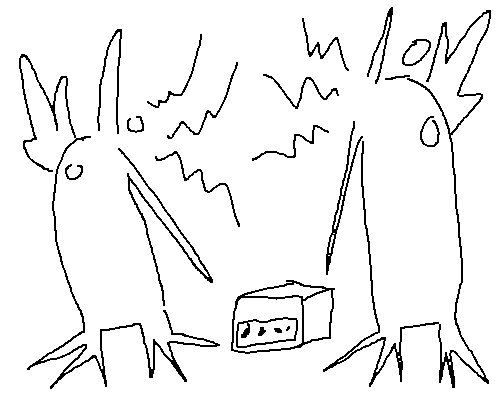

All art is part of a conversation with all other art (everything influences each other even subconsciously). The only way to create a piece of art that isn't in this conversation is to finish it (or not, as the case may be) and then never share it with everyone. Until, of course, the artist releases another project, which will then introduce that unshared piece of art into the equation as the artist experiences it and so inevitably will have a piece of it in their new art. Thereby the only true way to create art without it conversing is to have someone that cannot access the outside world and anything they make is never shared with anyone else, and also have them make only 1 piece of art ever (so it does not influence their future work). Ideally also they never talk to anyone etc etc what I'm getting at is we need to lock a baby in a big room and never monitor them for their entire life.
Conversation of art is great because completely new things can only be created in increments, each step based on other previous new arty steps. Unfortunately the videogame space is rather conservative. All videogames, including most indie games (commercial indie games, still true for non-commercial as well though) are actually just trying to be other games that already exist. When Balatro came out and got really really successful, all indie devs immediately hopped on and applied the same equation that Balatro came up with (thing + rube goldberg big number generation). It's not a bad thing of course, we got Nubby's Number Factory out of it, but the ratio of vertical (new ideas) to horizontal (exploring existing ideas in different ways) explorations in the videogame sphere is so skewed towards horizontal. All games are X, but now with Y. They are not often just Z. If videogame evolution were a tree, it would be a stump with continent-sized branches. It's to be expected that durante el capitalismo (in spanish to soften the blow of using the word "capitalism" in writing) devs have to base games off things customers already know to sell, and the games that are trying to sell are, if not the majority, have the most eyes on them and influence contemporary culture the most, and so the games that are free of need for financial gain and are actually able to explore vertically are rarely seen, never able to be vertically nor horizontally expanded upon. Only when a commercial game that does attempt to grow upwards somehow achieves success, like Balatro, can the industry grow by allowing the less experimental to feed off a big fat golden goose.
Of course, because all games are so conservative, and their history started in the commercial rather than homebrew or artistic scene (minus a few pockets of bedroom coders with the ZX Spectrum for a while), even if developers were free to go crazy in a William Morris world and create something completely new, would they? Or would they want to make their Dream-Open-World-Survival-Crafting-Fantasy-Creature-Collecting-Roguelike-MMO videojuego still? I think they would exercise the creativity. The most recent scourge of anybody and truly anything programmers was when flash was at its height. People really made whatever, and despite us only reminiscing on the cleanest of its leftovers (I'm definite there are far more different and creative games in the scrappier islands of the scene), I can't think of many flash games that didn't bring something new amongst their contemporaries to the table (think Henry Stickmin, Papa's Pizzeria, Kick the Buddy, etc etc, you get the idea.). I don't know what happened in the move from flash to today's world of Indie Professionalism. Well actually, it's very obviously money. Money being on the table in the new indie world left conversations in the indie world to swing towards talking about money, and thereby strategies to get more money, which, as all conversations about making money tend to do, led to homogeny. I know the flash game mentality still exists, I just hope one day it spreads waaaaay further. Christ, a lot of games need it.
(and before someone says, yes I have been guilty of this and yes I will be guilty of it again in the future. blehehelhfhefhehehlelehehehehehehehehehhhhhhhhhhhhhhhhhhhh.)